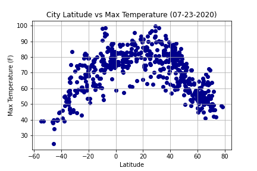

Maximum Temperature

{kind=link}
The The latitude vs temperature plot shows how the temperature increases as latitude is closer to the Equator.
Latitude is one of the primary factors that affect temperature. As one moves further away from the equator, the temperature falls because regions receive less sunlight. The reason behind this is the shape of the earth. The shape of the earth is an oblate spheroid. Thus, not all locations receive the same amount of sunlight heat or insolation (Incoming Solar Radiation). Another reason for the difference in temperatures varying with latitude is the angle of solar incidence. The rays from the sun strike the surface of the earth at different angles. At the equator, the incidence of the sun's rays are at a right angle, and this translates to more heat because they are concentrated over a small area. It also implies that less heat is lost in the atmosphere because they travel a short distance in the atmosphere. On the other hand, at the poles, the sun rays strike the surface of the earth at an acute angle. The rays from the sun are dispersed over a large area. This also implies that more heat is lost in the atmosphere because they travel long distances over the atmosphere before it hits the earth’s surface.